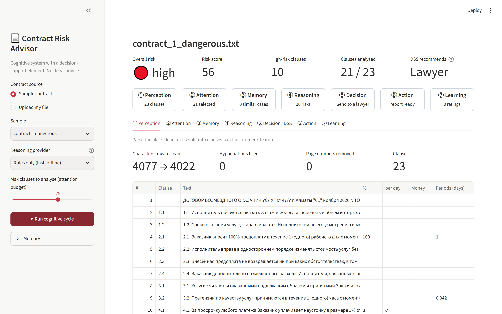
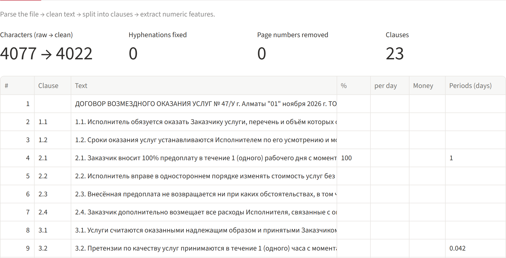
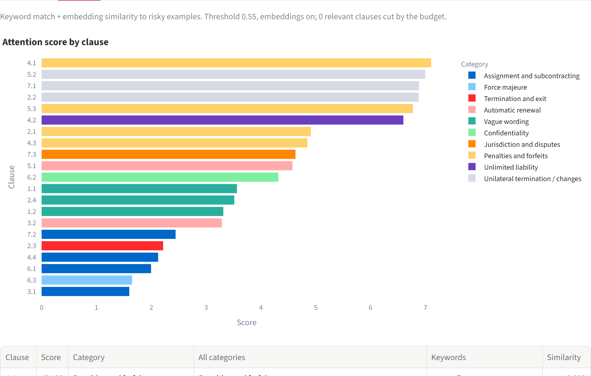
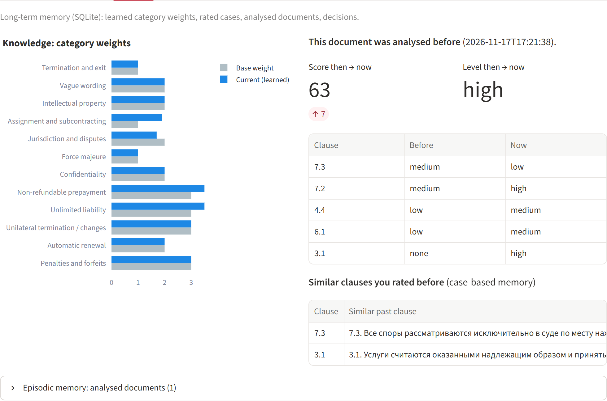
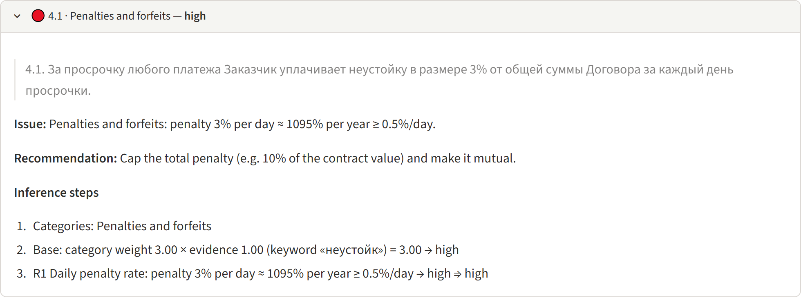
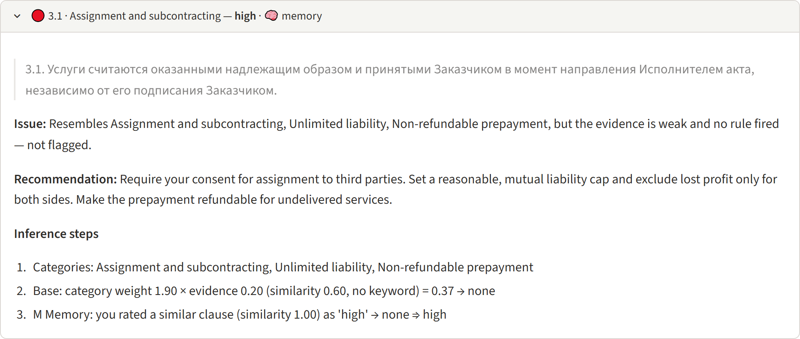
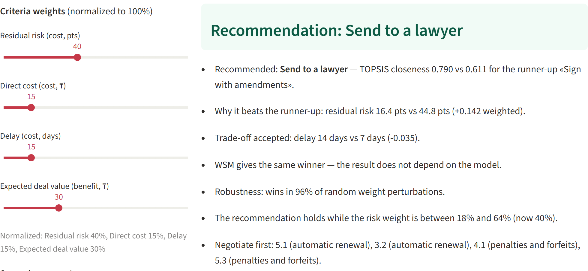
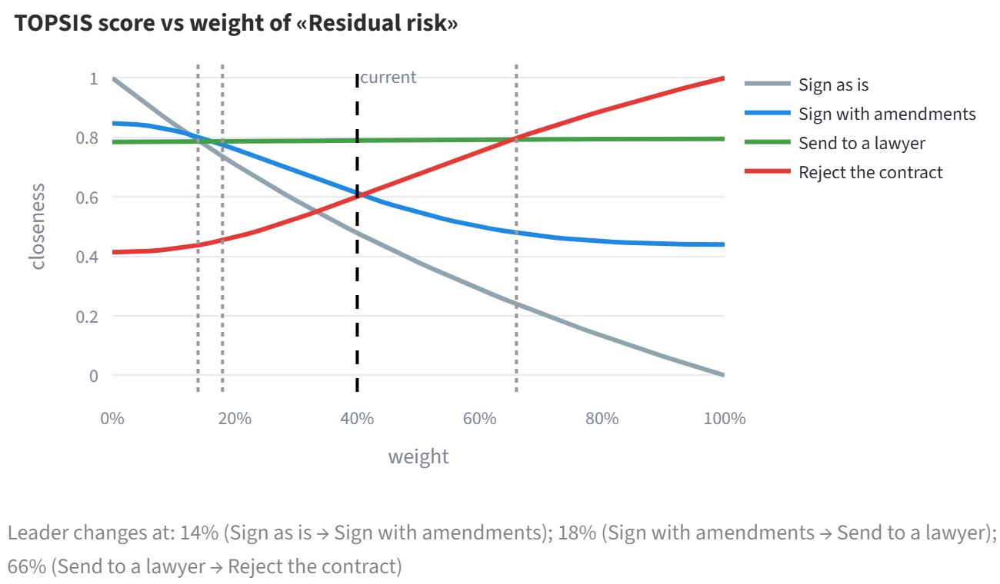

| Criterion | Type | Sign | Amend | Lawyer | Reject |
|---|---|---|---|---|---|
| Residual risk | cost | S | S − p·F | S·(1−e) | 0 |
| Cost ₸ · Delay | cost | 0 | c, d | L, d | 0 |
| Deal value ₸ | benefit | V | V(1−w) | V(1−w) | 0 |

| Contract | Risk score | Level | DSS |
|---|---|---|---|
| Dangerous | 56 | high | Lawyer |
| Medium | 20 | medium | Lawyer* |
| Balanced | 9 | low | Sign |